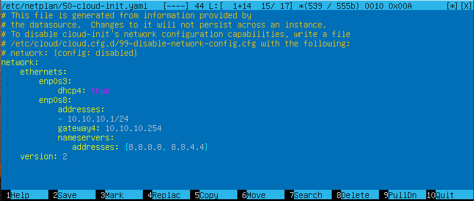
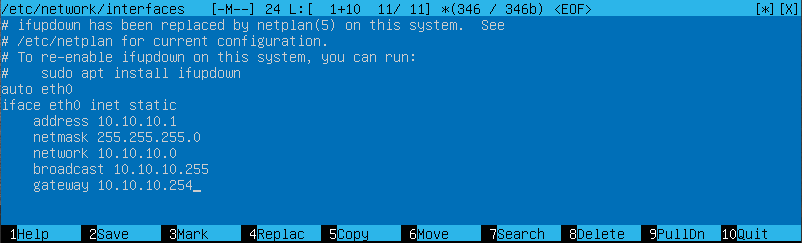

Test 01 - Linux: katalogi - dopasuj katalogi ( 10 elementów )
zawiera wykonywalne pliki najbardziej podstawowych narzędzi systemowych,
dostępne dla wszystkich użytkowników bin :-)
zawiera pliki niezbędne do uruchomienia systemu, a w przypadku większości
dystrybucji - także obraz jądra systemu boot :-)
tutaj są montowane (podłączane do systemu) dodatkowe dyski
(np. partycje systemu Windows) mnt :-)
zawiera pliki specjalne wskazujące na urządzenia w systemie; za ich pomocą
system komunikuje się z tymi urządzeniami dev :-)
katalog domowy użytkownika root root :-)
zawiera dzielone biblioteki systemowe i moduły jądra (w katalogu /lib/modules) lib :-)
katalog główny / :-)
w tym katalogu znajdują się katalogi domowe użytkowników systemu home :-)
zawiera pliki konfiguracyjne systemu etc :-)
wirtualny katalog zawierający informacje o uruchomionych procesach proc :-)
Test 02 - Linux: katalogi - dopasuj katalogi ( 10 elementów )
zawiera pliki specjalne wskazujące na urządzenia w systemie, za ich
pomocą system komunikuje się z tymi urządzeniami dev :-)
zawiera pliki systemu operacyjnego sys :-)
zawiera pliki wykonywalne, które mogą być wykonywane tylko przez
administratora systemu. sbin :-)
katalog główny / :-)
katalog zawierający dodatkowe oprogramowanie (odpowiednik katalogu
Program Files w systemie Windows) usr :-)
zawiera pliki niezbędne do uruchomienia systemu boot :-)
zawiera pliki konfiguracyjne systemu etc :-)
katalog przeznaczony na pliki, które często ulegają zmianie,
np. logi systemowe, pliki udostępniane przez serwer WWW itp. var :-)
zawiera wykonywalne pliki najbardziej podstawowych narzędzi systemowych bin :-)
katalog służący do zapisu plików tymczasowych tmp :-)
Test 03 - Linux: rodzaje plików - dopasuj pliki ( 7 elementów )
zbiór danych zapisanych na dysku (w wynikach działania komendy ls -l oznaczony znakiem -) plik zwykły :-)
plik wskazujący na inny plik (oznaczenie literą l) dowiązanie symboliczne :-)
plik specjalny reprezentujący urządzenie, do którego dostęp realizowany jest znak po
znaku (bajt po bajcie) (oznaczone literą c) urządzenie znakowe :-)
katalog na dysku (oznaczony literą d) katalog :-)
plik wymiany między procesami (oznaczony literą s) (ang. socket) gniazdo :-)
plik specjalny reprezentujący urządzenie, do którego dostęp realizowany jest poprzez
większe porcje danych zwane blokami (oznaczone literą b) urządzenie blokowe :-)
plik wymiany informacji między procesami, działający jako kolejka FIFO (first in first out)
(ang. named pipe) (oznaczony literą p) nazwany potok :-)
Test 04 - Linux: oznaczenia plików - dopasuj pliki ( 7 elementów )
katalog d :-)
nazwany potok p :-)
dowiązanie symboliczne l :-)
plik zwykły - :-)
urządzenie blokowe b :-)
urządzenie znakowe c :-)
gniazdo s :-)
Test 05 - Linux: urządzenia i katalogi - dopasuj urządzenia i katalogi ( 10 elementów )
mysz szeregowa /dev/mouse :-)
pierwsza partycja pierwszego dysku /dev/hda1 :-)
pierwszy dysk IDE /dev/hda :-)
pierwszy port drukarki /dev/lp0 :-)
pierwsza dyskietka /dev/fd0 :-)
pierwsza partycja drugiego dysku /dev/hdb1 :-)
drugi dysk IDE /dev/hdb :-)
urządzenie puste (do testów) /dev/null :-)
konsola systemu operacyjnego /dev/console :-)
druga partycja pierwszego dysku /dev/hda2 :-)
Test 06 - Linux: powłoki systemowe - dopasuj powłoki systemowe ( 5 elementów )
powłoka stworzona dla systemów Unix przez Stephena Bourne'a sh (shell) :-)
jedna z powłok systemowych, która nawiązuje do składni języka C.
Wniosła wiele ulepszeń w stosunku do sh csh (C shell) :-)
odmiana powłoki Bourne'a, udostępniająca okrojone funkcje powłoki sh rsh (reduced shell) :-)
całkowicie kompatybilna z powłoką sh, zawiera także elementy powłoki csh,
zawiera wbudowany system obliczania wyrażeń arytmetycznych i funkcje skryptów ksh (korn shell) :-)
rozszerzona powłoka, zawierająca historię poleceń i konstrukcje umożliwiające
sterowanie przepływem danych (if, while, for). Jest ona domyślną powłoką systemu Linux. bash :-)
Test 07 - Linux: uprawnienia - dopasuj uprawnienia ( 8 elementów )
zapis 2 :-)
odczyt, wykonanie 5 :-)
odczyt, zapis, wykonanie 7 :-)
brak uprawnień 0 :-)
wykonanie 1 :-)
odczyt 4 :-)
odczyt, zapis 6 :-)
zapis, wykonanie 3 :-)
Test 08 - Linux: znaki i typ pozycji - dopasuj znaki i typ pozycji ( 7 elementów )
specjalny plik reprezentujący urządzenie blokowe b :-)
zwykły plik - :-)
dowiązanie symboliczne l :-)
potok p :-)
specjalny plik reprezentujący urządzenie znakowe c :-)
katalog d :-)
gniazdo s :-)
KONFIGURACJA SIECI
DAMIAN STELMACH
Ustawienia IP dla kart sieciowych w Ubuntu można wykonać na trzy sposoby:
podczas instalacji systemu
poprzez polecenia terminala
poprzez edycję pliku ustawień sieci
Konfiguracja IP podczas instalacji systemu to najłatwiejszy sposób przypisania IP do poszczególnych kart sieciowych. Jeśli jednak tego nie zrobimy, musimy takiej konfiguracji dokonać już po tym, gdy system zostanie już zainstalowany. Bez względu na to jakiego sposobu chcemy użyć (to znaczy czy chcemy wykonać polecenie konsoli czy też edytować plik z ustawieniami), musimy poznać nazwy interfejsów sieciowych w systemie. Można to zrobić wydając jedno z dwóch poleceń:
ifconfig -a
ip a
Jedno i drugie polecenie wyświetli nam nazwy kart sieciowych oraz ustawienia IP jeśli takie karty już posiadają. W niektórych systemach ifconfig może nie działać, wówczas należy stosować polecenia z grupy ip.
W starszych wydaniach Ubuntu i w każdej innej dystrybucji interfejsy sieciowe kiedyś nazywały się np. eth0, eth1, czy np. wlan0 i wlan1 dla sieci bezprzewodowych. W związku z tym, że takie nazewnictwo powodowało czasem problemy, np. po restartach systemu kraty zmieniały swoje nazwy i usługi sieciowe nie działały, zaczęto stosować nazewnictwo interfejsów, oparte o np. położenie fizyczne kart sieciowych na płycie głównej.
W VirtualBox pierwsza karta sieciowa nazywa się enp0s3, a druga, trzecia i czwarta, odpowiednio: enp0s8, enp0s9 i enp0s10.
Znając już nazwy kart możemy wykonać jedno z dwóch poleceń ustawiających IP (każde należy wykonać na prawach roota:
ifconfig enp0s8 10.10.10.1 netmask 255.255.255.0 up
gdzie enp0s8 to nazwa karty, 10.10.10.1 to adres IP, 255.255.255.0 to maska, a parametr up uruchamia interfejs. To polecenie możemy wykorzystać jeśli działa ifconfig.
Albo też:
ip a add 10.10.10.1/24 dev enp0s8
ip l set enp0s8 up
Pierwsze polecenie nadaje dla karty enp0s8 adres IP, a drugie uruchamia kartę.
Ta opcja dotycząca ustawień IP posiada niestety jedną zasadniczą wadę. Po restarcie maszyny ustawienia nam znikają. Oczywiście da się napisać skrypt, który będzie odpalał się przy starcie systemu i ustawiał IP, ale to jeszcze nie czas na pisanie skryptów. Można jednak wrócić do klasyki i ustawić IP na sztywno, dodając odpowiednie wpisy w pliku konfiguracyjnym sieci. W nowych systemach Ubuntu (od wersji 17.10) konfiguracja IP zapisywana jest w pliku /etc/netplan/50-cloud-init.yaml (w niektórych systemach numer może być inny). W starszych wersjach Ubuntu ustawienia IP znajdują się w pliku /etc/network/interfaces
Konfiguracja IP w pliku /etc/netplan/50-cloud-init.yaml wygląda następująco:

Plik zawiera ustawienia dla dwóch kart: enp0s3 oraz enp0s8. Pierwsza karta adres otrzymuje automatycznie z serwera DHCP, druga ma ustawiony statyczny adres 10.10.10.1/24, bramę 10.10.10.254 oraz DNSy 8.8.8.8 i 8.8.4.4.
Plik edytowany został za pomocą edytora mcedit (edycja wybranego pliku rozpoczyna się po wciśnięci klawisza F4 na klawiaturze), który jest integralną część pakietu mc, ale można go również edytować innym edytorem, np. nano. Aby można było zapisać zmiany w tym pliku (klawisz F2 na klawiaturze zapisuje zmiany w mc), samo mc musi być uruchomione na prawach roota. Po zapisaniu zmian w pliku należy je następnie zastosować, wydając polecenie:
netplan apply
UWAGA!
Konfiguracja IP z pliku .yaml może się okazać kłopotliwa. Plik jest bardzo wrażliwy na składnię i każdy niepotrzebny znak, tabulator czy brak odpowiedniego odstępu może spowodować, że zmiany nie zostaną zapisane i wyświetlone zostaną komunikaty błędów przy próbie wykonania polecenia netplan apply. Zwracajcie uwagę na to, aby każdy wpis był umieszczony w odpowiedni sposób (jak na grafice) i aby wcięć nie robić klawiszem TAB, tylko spacją.
Konfiguracja IP w pliku /etc/network/interfaces nie jest tak uciążliwa i wygląd następująco:

Po zapisaniu pliku wykonujemy restart usług sieciowych za pomocą polecenia:
/etc/init.d/networking restart - Ten sposób stosuje się tylko w systemach Ubuntu 17.10 i starszych. W nowych systemach zalecane jest używanie netplan i pliku .yaml